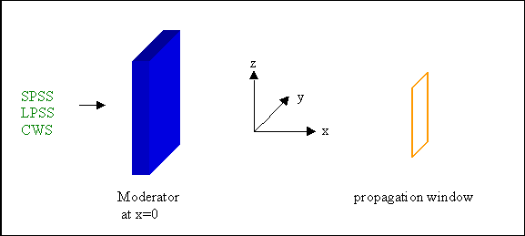
| Parameter Unit |
CWS |
SPSS |
LPSS |
Description | Range or values | Command Option |
| moderator description file | X | X | X | Name of the file describing the moderator characteristics (see below) | any | -a |
| source power [MW] |
--- | x | X | power of the source to determining the moderator flux only implemented for ESS and SNS, for all other sources the flux of the moderator has to be given |
>= 0.0 | -L |
| pulse repetition rate [Hz] |
--- | X | X | frequency of a pulsed source | >= 0.0 |
-R |
| proton pulse length [ms] |
--- | --- | X | proton pulse length of long pulse source | >= 0.0 | -p |
| name of source | --- | X | X | Name of a neutron source, for which analytical functions are implemented to describe the moderator characteristics | "ESS", "SNS", "CSNS" | -N |
| data base | --- |
X |
X |
Version of moderator characteristics, available for ESS and SNS, see the paragraph "ESS and SNS" below. | 1 - 4 | -v |
Every trajectory represents a package of a certain number of neutrons passing per time, i.e. a certain neutron current. The sum over all trajectories gives the total neutron count rate. From one module to the following, the 'number of trajectories' decreases, e.g. if a window or the sample is not hit. The intensity further decreases by reflections or absorption inside a material. In these cases the number of trajectories is unchanged, but the count rate per trajectory is decreased. So absolute values of the count rate are given at any point of the instrument, if the moderator count rate can be determined.
The direction is defined by the angles phi and theta, which define the angular deviation range with respect to the straight flight direction
(parallel to the x-axis) as illustrated for special cases below:
first sketch : div-range illustrated for neutrons having no z-divergence;
second sketch: div-range for neutrons having no y-divergence
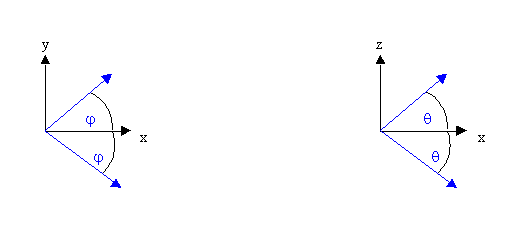
The effect of gravity is considered in this module, if this option is chosen. The parameter 'minimal weight' is not considered.
| Paramter Unit |
Description |
Range or Values |
Command Option |
| number of trajectories | number of rays generated in the source module. This is the number of events simulated. The intensity (at any point of the instrument) is independent of this number - except that the deviation from the true value will decrease with an increasing number of trajectories. | >= 0 |
-n |
| min. wavelength, max. wavelength [Å] |
minimal and maximal wavelength used in the simulation |
>= 0 |
-m, -M |
| min. time, max. time [ms] |
pulsed sources: time range of the pulse (as considered in the simulations) continuous source: usually min. time = max. time = 0.0, i.e. all neutrons starting at time zero. Otherwise a rectangular pulse is generated, which is e.g. necessary for time-of-flight instruments at continuous sources |
no restriction |
-t -T |
| max. div. x <-> y max. div. x <-> z [deg] |
The horizontal divergence phi (see figure below) is chosen in the interval [-max.div x - y , +max.div x - y] The vertical divergence theta (see figure below) is chosen in the interval [-max.div x - z , +max.div x -z] |
0 ... 90 0 ... 90 |
-y -z |
| direction defined |
The direction can be determined by a Monte Carlo choice of the horizontal and vertical divergence between the maximal values as given by the user.
Alternatively, the direction can be determined by the starting point on the moderator surface and a point on
the propagation window (see below), which are both determined by MC choices. If the option "by virtual window" is chosen, the 'propagation window' is only used to define the flight direction, but the neutrons remain on the moderator surface. In both other cases the neutrons are propagated to this window. |
"by divergence" "by window" "by virtual window" |
-d |
Apart from the source itself, there is a aperture included in
the source module (to restrict the amount of data that is transfered
to the following module). Height and width of the aperture as well as
its distance to the source must be given. Additionally an angle can be
given that describes the declination of the aperture center (= beam direction)
to the normal of the moderator surface (in the horizontal plane). The default
value is 0° meaning beam direction vertical to moderator surface. For
angles not equal zero, the moderator surface is rotated around the (positive)
z-axis (relative to the beam direction).
To omit this propagation, a zero distance and a aperture size exceeding the moderator size can be given.
Alternatively, the option "direction defined by virtual window" can be chosen.
In this case, the 'propagation window' is only used to define the flight direction,
but the neutrons remain on the moderator surface.
| Paramter Unit |
Description |
Range or Values |
Command Option |
| distance to window [cm] |
distance from source to position of the (virtual) target window, which the neutron are sent or propagated to | >= 0 | -D |
| window width/height [cm] |
width and height of the (virtual) target window, which the neutron are sent or propagated to | >= 0 | -w -h |
| declination [deg] |
angle between beamline direction and normal to the moderator surface the intensity is supposed to be isotropic and is thus not influenced by this angle, but short pulses will be stretched |
-90° ... 90° | -i |
| distance to time window [cm] |
distance from source to position of time window | >= 0 | -s |
| min. TOF, max. TOF to time window [ms] |
only neutrons that arrive at the given position in the specified time range are considered in the simulation |
no restriction |
-f -F |
The polarization of the neutron beam is needed in some test computations. Therefore an "internal" polarizer is defined in the source module. Initial values of the percentage and the direction of polarization have to be given. The spin vector belonging to each trajectory is represented in cartesian coordinates. The output represents an ansamble of "Up" and "Down" neutrons relative to the given direction of polarization. The average polarization will be that given by the input parameter "degree of polarization". For non-polarized beam (0%) the numbers of "Up" and "Down" trajectories are the same.
To enable ray-tracing, the 'ray-tracing file' has to be given here and the 'kind of ray-tracing' has to be chosen. The ray-tracing file contains the IDs of the trajectories to be traced. The 2 different modes of ray-tracing are explained in a special help file called 'Ray-tracing'.
| Paramter Unit |
Description |
Range or Values |
Command Option |
| Polarisation X, Y and Z | X- Y- and Z-component of the polarisation direction | -1 ... 1 | -X, -Y, -V |
| degree of polarisation [%] | percentage of the polarized neutrons 0% degree means 50% of the neutrons in polarisation direction, 100% degree means all neutrons in polarisation direction |
0 ... 100 | -P |
| time of measurement | the number of neutrons leaving one module (or arriving on the detector) will be calculated, if the time of measurement is given | >= 0 | -A |
| desired wavelength | If the desired wavelength is given, the optimal phases of the disc choppers are calculated and written to the file 'instrument.inf' | > 0 | -W |
| raytracing file | File containing IDs of the trajectories to ray-traced. The output of a writeout module can be used for example. | any | -r |
| kind of raytracing | defines if raytracing takes places and in which way - see help file called 'Raytracing'. | 'no' 'write trace files' 'only trace trajectories' |
-k |
Moderator parameters are taken from a file that contains information
about the moderator system, consisting of up to 3 moderators. Data of 2
moderators can be given on the moderator window. So each source can be described
by a file. The existing files are collected in <VITESS install. directory>/FILES/moderators.
(Additional files describing beamlines of the ISIS target stations can be
downloaded from the internet site www.isis.rl.ac.uk/computing).
Please send us your files that we can distribute them, if possible.
The moderator characteristics can either be given by
distribution files - intensity as a function of wavelength, of time,
or of time and wavelength - or analytical functions are used. Analytical
functions are only used in the simulation, if the corresponing distribution
file is not given, i.e. the Maxwellian distribution is calculated from
the given temperature, if no 'wavelength distribution file' is given, and
the pulse shape is calculated from the given time constants, if no 'time
distribution file' is given. Table 1 gives a survey.
| source type |
source name |
temperature | distr. files |
tau1, tau2 |
width, height | total flux | pulse rep. rate | pulse length of LPSS |
flux distribution |
| ESS | ESS | from input 50 or 325 K |
- - |
fixed |
from input (12x12cm²) |
calculated | from input (50 Hz) |
from input (2 ms) |
analytical funct. |
| SNS | SNS | from input 50 or 325 K |
- - |
fixed |
from input (12x12cm²) |
calculated | from input (50 Hz) |
--- | analytical funct. |
| continuous src. | - |
from input | - |
--- |
from input (12x12cm²) |
from input | --- | --- | Maxwell. distr. |
| continuous src. | - |
- | wavelength |
--- |
from input (12x12cm²) |
calculated | --- | --- | wavelength distr. file |
| pulsed src | - |
from input | - - |
from input (12 us; 60 us) |
from input (12x12cm²) |
from input |
from input (50 Hz) |
from input (2 ms) |
Maxwell. distr. function time distr. function |
| pulsed src |
- |
- |
wavelength - |
from input (12 us; 60 us) |
from input (12x12cm²) |
calculated |
from input (50 Hz) |
from input (2 ms) |
wavelength distr. file time distr. function |
| pulsed src |
- |
from input |
- time |
- |
from input (12x12cm²) |
from input |
from input (50 Hz) |
from input (2 ms) |
Maxwell. distr. function time distr. file |
| pulsed src | - |
- | wavelength time |
- |
from input (12x12cm²) |
calculated | from input (50 Hz) |
from input (2 ms) |
wavelength distr. file time distr. file |
| pulsed src |
- |
- |
wavelength-time |
- |
from input (12x12cm²) |
calculated |
from input (50 Hz) |
from input (2 ms) |
wavelength-time distr. fct. |
---: not existing
- : not used
( ) : numbers in brackets give the default values
| Parameter Unit |
CWS |
SPSS |
LPSS |
Description | Range or values |
| moderator type |
X |
X |
X |
type of moderator, important for 'special sources' (0: unknown or not important, 1: decoupled poisoned, 2: decoupled unpoisoned, 3: coupled, 4: multi-spectral) Multi-spectral moderators consist of 2 or more parts, e.g. a cold and a thermal moderator, giving an effective flux distribution from the whole moderator, which is achieved by a special beam extraction system that is able to add the short wavelength distribution of the thermal moderator and the long wavelength distribution of the cold moderator (see F. Mezei: "Instrumentation Concepts" in "The ESS project Volume II", ed. D. Richter, 2002). The effective flux distribution was published by F. Mezei in Feb. 2002 as an email to the members of the ESS Instrumentation Task Group. This moderator can be used for simulations of instruments at ESS and SNS. |
0 - 4 |
| moderator shape |
X |
X |
X |
shape of the moderator: 0: rectangular,1: circular |
0, 1 |
| wavelength distr. file |
X |
X |
X |
file describing the wavelength dependence of the intensity (see also text) If the 'wavelength distribution file' is given, the temperature is not used. |
|
| time distribution file |
--- |
X |
X |
file describing the time dependence of the intensity (see also text) If the 'time distribution file' is given, the relaxation times and the pulse length are not used |
|
| wavelength-time distr. file |
--- |
X |
X |
file describing the wavelength and time dependence of the intensity (see also text above) If the 'wavelength-time distribution file' is given, the relaxation times, the pulse length, and the temperature are not used |
|
| moder. temperature [K] |
X |
X |
X |
moderator temperature only used, if neither 'wavelength-time distribution file' nor 'wavelength distribution file' are given. |
> 0.0 |
| moder. width or diameter [cm] |
X |
X |
X |
rectangular moderator: bordered by center_y ± mod.width/2 in y-direction (see also last row) circular moderator : diameter of the moderator |
> 0.0 |
| moderator height [cm] |
X |
X |
X |
rectangular moderator: bordered by center_z ± mod.height/2 in z-direction (see also last row) circular moderator : not used |
> 0.0 |
| spatial order |
X |
X |
X |
see following picture |
|
| total flux at moderat. [n/(cm²s)] |
X |
X |
X |
Flux on moderator surface into solid angle 2*pi integrated over the whole wavelength range ([0, infinity] for analytical
functions or total range given in distributions file) assuming an isotropic flux distribution into 2*pi. It is sensible to give this value, if a Maxwellian distribution determined by the temperature is used, because this distribution is normalized to give an integral of 1. If a 'wavelength distribution file' or a 'wavelength-time distribution file' is used, it is straightforward to use a file with realistic flux values and to omit this value. But if it is given, it is assumed to be the correct value and thus the data of the file are normalised to give this total flux value. |
> 0.0 |
| neutron current [n/s] |
X |
X |
X |
Count rate leaving the moderator into the chosen solid angle, integrated over moderator area and chosen wavelength range. If the 'neutron current' is given, the flux is normalized to that value. This is only sensible, if the calculated current is zero, i.e. if moderator area, solid angle or wavelength range are zero. |
> 0.0 |
| tau_1 tau_2 [ms] |
--- |
X |
X |
time constant of the pulse shape (of pulsed sources): tau_2 describes the decay of the pulse, whereas both describe the shape in the beginning of the pulse (see equations for pulsed sources above). |
> 0.0 > 0.0 |
| colour |
X |
X |
X |
see following picture | 0 - 32767 |
| center of moderator X Y Z [cm] |
X |
X |
X |
position of the moderator center - default: (0.0, 0.0, 0.0) necessary to describe the arrangement of two or three moderators |
no restriction |
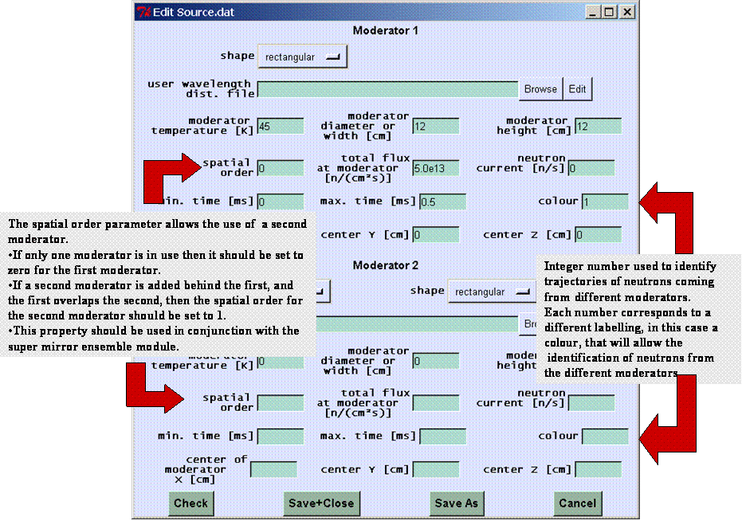
1. Moderator Characteristics by Analytical Functions
For a reactor source, the Maxwellian distribution function can be used to describe the wavelength dependence of the neutron flux:
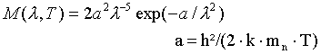
Therefore, the temperature has to be given. It is only used, if no 'wavelength distribution file' is given.
For a pulsed source, this wavelength dependence (or the 'wavelength distribution function' read from file) can be multiplied by a time dependent function F(t). For SPSS and LPSS we use:
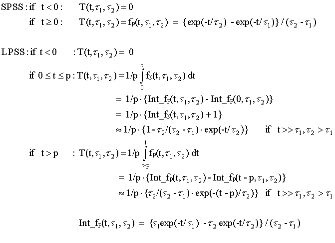
The parameters determining the pulse shapes must be given as an input. The second time constant describes the decay of the pulse, whereas both describe the shape in the beginning of the pulse. The length of the long pulse is determined by the proton pulse length. The decay is comparable to that of the short pulse. These functions are only used, if no 'time distribution file' is given.
ESS and SNS
The ESS "butterfly" moderator
The database version 2015_Butterfly selects the ESS flat moderator baseline as specified in the beginning of 2015. Differently to other database versions, almost all parameters of this moderator are set by default to describe the "butterfly" moderator geometry with a central thermal moderator and cold wings. The top moderator is 3 cm high, the bottom moderator 6 cm. Thus the only input parameter taken from the moderator description file is the height, which has to be either 3 cm or 6 cm. The beamport position is chosen by the declination angle, which can be between 0° (rectangular to the proton beam) and pm 55°, and is taken w.r.t. the (thermal) moderator center. Note that the monolith inserts are planned to point in between the cold and thermal moderator; this can be modelled by an additional frame module. In the same way, the viewpoint of the beamline can be adjusted to look at either the cold or thermal moderator instead. Note further that the moderator width varies as a function of the declination angle, and that the value given in the VITESS log file is without projection onto the viewpoint. The moderator is symmetric for pos. and neg. declination angles. Only the closer cold moderator can be viewed from a given declination angle. The only exception is a declination of 0°, from which both cold moderators are visible (cf brightness curves below).
The moderator description uses functions developed by T. Schoenfeldt, which are described in more detail in "Phenomenological Study of Expected Cold and Thermal Brightness Phase-Space at ESS" by T. Schoenfeld et. al (in preparation). The function were fitted to the 3 cm top moderator and extended to the 6 cm bottom moderator based on previous fits to the pancake moderator of different heights. Hence the model of the 6 cm moderator has to be regarded with a slightly larger systematic uncertainty than the 3 cm moderator.
Furthermore, engineering details which will reduce the performance were not part of the original model, but have been investigated since and found to decrease the brightness by 20-30%. Therefore, a factor of 0.75 is applied to the moderator brightness in VITESS. If the user desires a different factor, simulation results can simply be re-scaled.
|
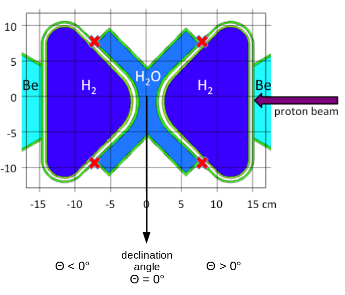 |
|
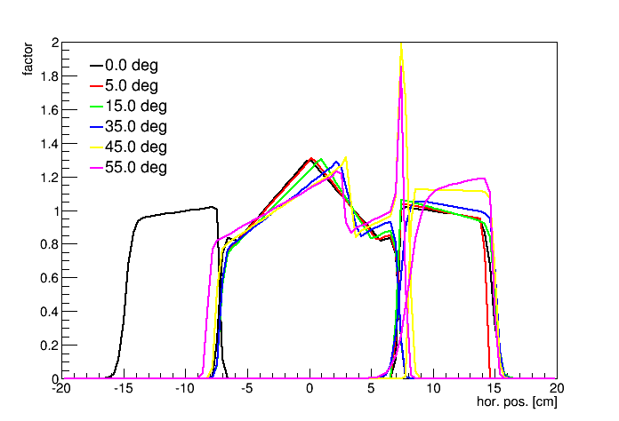 |
2. Moderator Characteristics from Files
Alternatively the moderator characteristics can be given in files. Instead of giving the temperature, a 'wavelength distribution function' can be read. Instead of giving the time constants, a 'time distribution function' can be read. Both can be substituted at the same time by a 'wavelength-time distribution function'.
CW
For reactor sources, the so-called 'wavelength distribution function'
is needed. This file must contain a table of 2 columns. In the first column
the wavelength in Angstroem is expected, in the second the flux in flux
units (FU), i.e. n/(cm² s Ang str). The first column must have increasing
values. The wavelength range that can be used must be covered by the
range in this file.
From these data the 'total flux at the moderator' and the current
into a solid angle W are calculated:
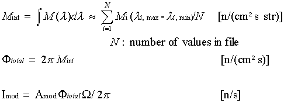
If the 'total flux at moderator' Ftotal is given, it is assumed that this is the real value and thus the data of the file are normalised to that value. If the 'neutron current' Imod is given, the flux is normalized to that value. This is only sensible, if the calculated current is zero, i.e. if area Amod, solid angle or wavelength range are zero.
SPSS/LPSS
For a pulsed source, the wavelength dependence of the intensity
can be determined by a given 'wavelength distribution function'
as in the CW case. Additionally, the time dependence of the flux can be
determined by a 'time distribution function'. It describes the time dependence
of the pulse. In the first column the time [ms] has to be given, in the
second the amplitude of the flux. The product of the amplitude given in
the wavelength distribution and that given in the time distribution must
have the unit n/(cm² s Ang str).
It is also possible to read a 2-dimensional file containing F(l,t).
In the first row the wavelength values (in Angstroem) are expected.
All following have the time (in ms) in the first column followed by flux values (in FU) for all wavelengths -
see examples 'FluxLmbdTime.dat' or files in 'IsisModData'. (Comment lines starting with '#' are allowed.)
In this approach of F(l,t) being the product of the wavelength and the time distribution function,
one gets the following equations to determine the time averaged total flux andmthe time averaged current into a solid angle W:
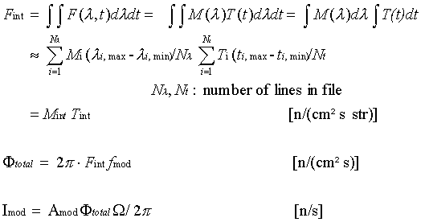
Artificial sourceA simple rectangular or even instantaneous pulse can be generated by using the CWS module and restricting the time window (see neutron parameters) to the according range or to 0, respectively.
For both ways to restrict the divergence (by window and by max. angles), the solid angle corresponding to the divergence window is calculated, in order to determine absolute flux values. For every trajectory, the count rate that it represents has to be calculated. If we have chosen an analytic function to describe the moderator (e.g. the Maxwellian distribution), we just use that value of M(l), T(t) or F(l,t) in the equation.
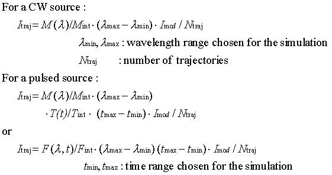
If the distribution files are used, M(l) or T(t) are interpolated in logarithmic scale, e.g.
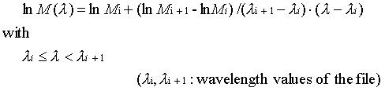